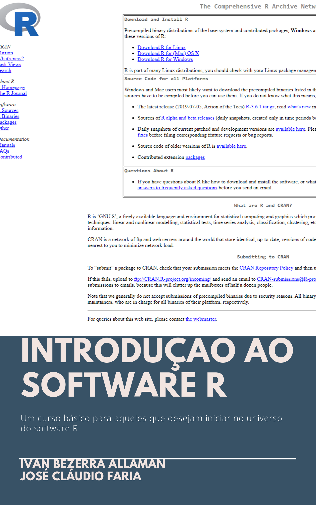

Introdução ao software R
2019-10-13
Prefácio

Este livro foi redigido com o intuito de apresentar as noções básicas do software R, inspirado principalmente no curso de extensão oferecido pelo Laboratório de Estatística Computacional (LEC) da Universidade Estadual de Santa Cruz (UESC), vinculado ao projeto de extensão “Ferramentas Estatísticas para Análise de Dados”.
No primeiro capítulo é apresentado um breve histórico do software R, seus principais editores e plugins, suas pontencialidades e limitações e quais são as grandes empresas mundiais que o utiliza. No segundo capítulo é apresentado uma variedade de materiais gratuitos ou pagos, sejam em livros, webpage ou vídeos sobre o software R. O terceiro capítulo mostra como instalar o R e o editor Tinn-R, sendo este último utilizado como principal IDE ao longo do livro. Uma vez que o Tinn-R será utilizado como editor neste livro, o quarto capítulo mostra de um modo bem introdutório como usá-lo. Uma breve apresentação das pontencialidades do R é apresentado no capítulo cinco. Como instalar e carregar pacotes, documentações e funções de ajuda são apresentados no capítulo seis. Algumas funções elementares para listar os objetos criados e os pacotes carregados são apresentados no capítulo sete. Os operadores de atribuição, aritimética e lógica estão no capítulo oito. No capítulo nove, inicia-se a principail estrutura para o aprendizado do R, que é a elaboração de vetores. Nos capítulos 10 e 11, inicia-se o aprendizado das estruturas com 2 (matrizes) e p dimensões (arrays) respectivamente. A principal classe no qual a grande maioria de dados é atribuida, é apresentado no capítulo doze, que são os data.frame. Como algumas situações requer o uso automático e rápido de procedimentos, no capítulo treze é apresentado as funções de condicionais e loops. Os assuntos do cálculo diferencial e integral são apresentados como funções no capítulo 14. Os recursos gráficos são apresentados de um modo básico no capítulo 15. E para finalizar este livro introdutório sobre o software R, é apresentado no capítulo 16 como importar banco de dados e exportar resultados.
Agradecimentos
Agredecemos a Universidade Estadual de Santa Cruz pela oportunidade de escrevermos este material.